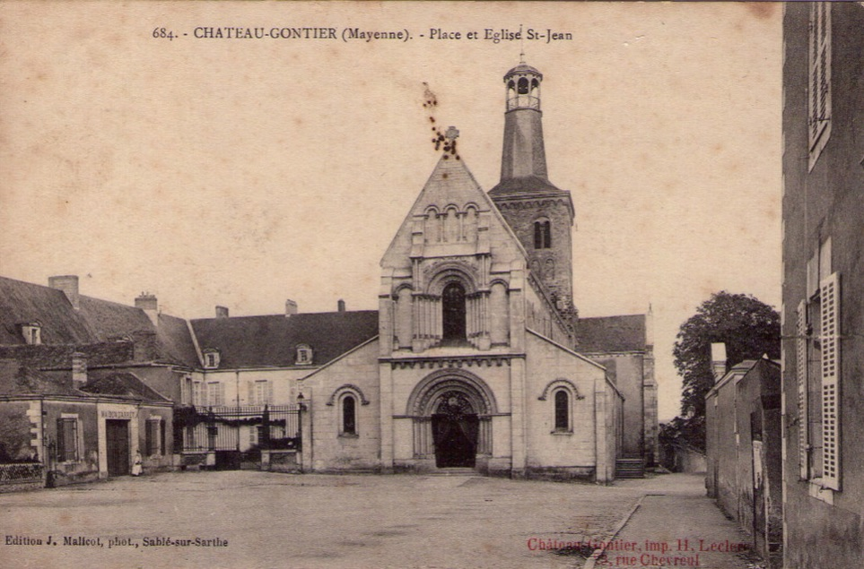
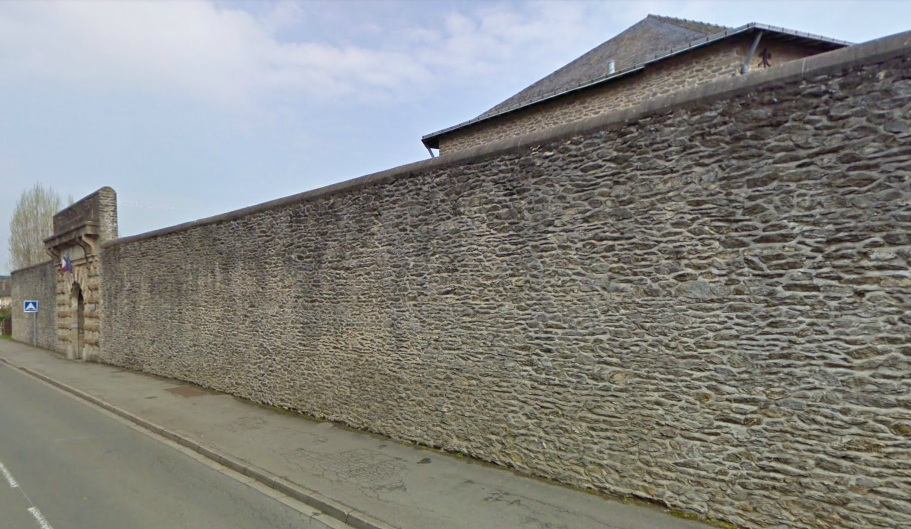
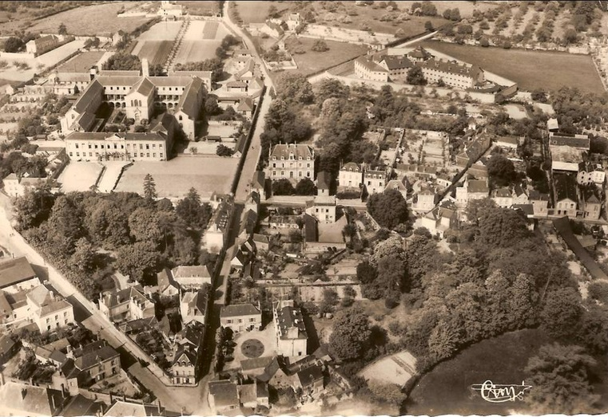
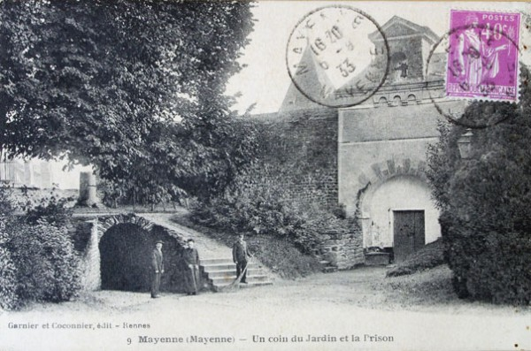
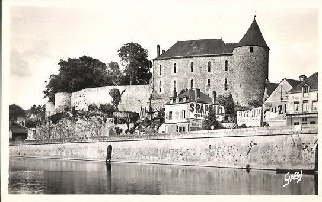

| Département | Images | Ville | Nom | Adresse | Période | Capacité | Histoire du lieu | Nombre d'exécutions |
| Mayenne (53) |  |
Château-Gontier | Maison d'arrêt et de correction | Place Saint-Jean | -1933 | Située tout à côté de l'église Saint-Jean. Désormais, presbytère. | Aucune exécution | |
| Mayenne (53) | Laval | Maison d'arrêt du Vieux-Château | Place de la Trémoille | 1792-1908 | L'histoire du château de Laval remonte aux années 1020, quand le seigneur Guy de Dénéré, futur maître de Laval, fait bâtir son premier castel à motte. L'édifice de bois laisse place, au fil du temps, à la pierre, avec un splendide donjon, puis une enceinte longue de plus d'un kilomètre. En 1542, on adjoint une nouvelle aile, qu'on baptise Le Château-Neuf. La Révolution fait du Château-Neuf un palais de justice et du Vieux-Château une prison jusqu'aux premières années du XXe siècle, même si dès 1840, les bâtiments sont classés monuments historiques, et une fois débarrassé de son dernier occupant, la partie la plus ancienne reste déserte jusqu'en 1950. C'est en 1966 que le peintre local Jules Lefranc propose d'y installer un musée d'Art naïf, afin d'y exposer une partie de ses propres oeuvres : l'idée est agréée, et le musée ouvre au public à compter du 20 juin 1967. Le Château-Neuf, lui, conserve en ses murs le tribunal jusqu'à ce que l'effondrement d'un mur fasse prendre conscience de la vétusté des lieux. Un nouveau palais de justice est construit entre 2003 et 2006 place Saint-Tugal, et l'ancienne salle d'assises vide est prévue pour servir de salle de réception. | Aucune exécution | ||
| Mayenne (53) |   |
Laval | Maison d'arrêt des Fourches | 20, bd Frédéric Chaplet | En service depuis 1908 | 54 places (1962) 73 places (2015) |
Oeuvre de l'architecte départemental Léopold Ridel, la "prison modèle"... Sur le plan de la peine capitale, elle héberge son premier condamné à mort un mois après sa mise en service. Quatre ans plus tard, c'est devant la porte qu'on guillotine le dernier supplicié du département. Enfin, en 1923, pas moins de trois condamnés vont successivement occuper le couloir de la mort, mais tous bénéficient de la grâce. En 1939, Laval fait partie des établissement susceptibles d'accueillir la guillotine, mais les assises de Mayenne n'ayant plus jamais à prononcer de verdict de mort, la décision n'aura aucune conséquence. | Une exécution en 1912 |
| Mayenne (53) |   |
Mayenne | Château - Maison d'arrêt et de correction | Place Juhel | 1745-1933 | Bâtiment vendu à la ville en 1935. | Aucune exécution |
{kind=link}
{kind=link}
{kind=link}
{kind=link}
{kind=link}